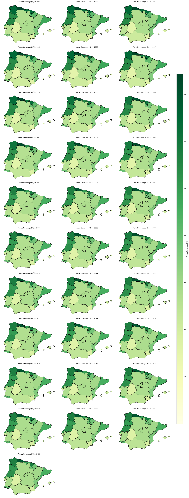
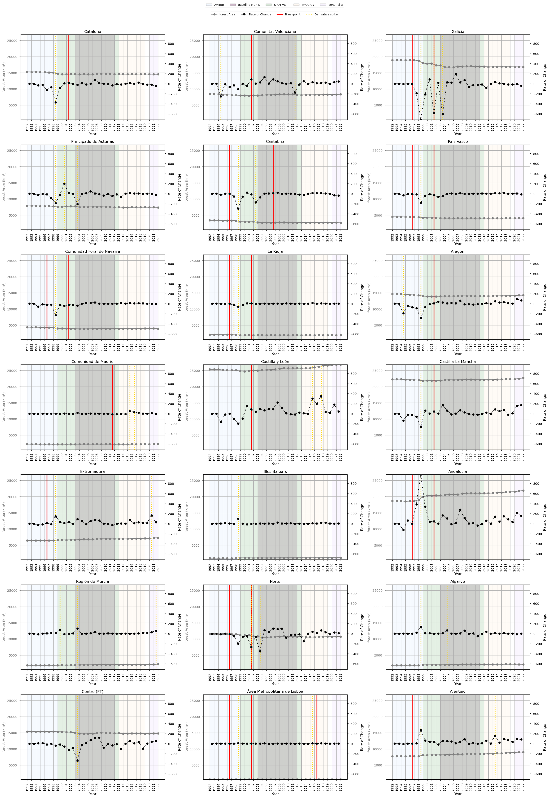

1.4.4. Satellite Land Cover trend assessment for Spatial Planning and Land Management#
Production date: 20-12-2024
Produced by: Inês Girão (+ATLANTIC)
🌍 Use case: Using land cover products to quantify afforestation/deforestation trends#
❓ Quality assessment question#
Is the dataset suitable for the analysis of afforestation/deforestation trends in the Iberian Peninsula?
Land Cover data is an invaluable resource for a wide range of fields, from climate change research to forest management. Land Cover products that provide historical timelines enable scientists, policymakers, and planners to understand and analyse the transformation of land cover over recent decades (EUROSTAT,2022; New EU Forest Strategy for 2030).
This notebook will access the Land cover classification gridded maps from 1992 to present derived from satellite observations (henceforth, LC) data from the Climate Data Store (CDS) of the Copernicus Climate Change Service (C3S), and analyse the spatial patterns of a specific LC type over a given Area of Interest (AoI) and time.
📢 Quality assessment statement#
These are the key outcomes of this assessment
The dataset maintains strong temporal continuity, with annual updates ensuring a smooth and reliable representation of forest land cover changes over time. While breakpoints were identified, they generally did not indicate major disruptions, reinforcing the dataset’s stability for long-term trend analysis.
The presence of breakpoints does not necessarily indicate abrupt landscape shifts but rather highlights the sensitivity of detection methods to gradual changes. This suggests that while breakpoints can help refine analysis, their impact on overall trends remains limited, emphasising the dataset’s resilience to minor variations.
For the specific land cover type analysed, the dataset exhibits a consistent ability to capture underlying trends. The similarity in results across segmented and total trends suggests that the data structure is well-calibrated, minimising distortions that could arise from classification inconsistencies or methodological biases.

📋 Methodology#
This Use Case comprises the following steps:
1. Define the AoI, search and download LC data
2. Inspect and view data for the defined AoI (Iberian Peninsula)
📈 Analysis and results#
1. Define the AoI, search and download LC data#
Before we begin we must prepare our environment. This includes installing the Application Programming Interface (API) of the CDS, and importing the various python libraries that we will need.
Install CDS API#
To install the CDS API, run the following command. We use an exclamation mark to pass the command to the shell (not to the Python interpreter). If you already have the CDS API installed, you can skip or comment this step.
Defaulting to user installation because normal site-packages is not writeable
Requirement already satisfied: cdsapi in /data/common/miniforge3/envs/wp5/lib/python3.12/site-packages (0.7.7)
Requirement already satisfied: ecmwf-datastores-client>=0.4.0 in /data/common/miniforge3/envs/wp5/lib/python3.12/site-packages (from cdsapi) (0.4.1)
Requirement already satisfied: requests>=2.5.0 in /data/common/miniforge3/envs/wp5/lib/python3.12/site-packages (from cdsapi) (2.32.5)
Requirement already satisfied: tqdm in /data/common/miniforge3/envs/wp5/lib/python3.12/site-packages (from cdsapi) (4.67.1)
Requirement already satisfied: attrs in /data/common/miniforge3/envs/wp5/lib/python3.12/site-packages (from ecmwf-datastores-client>=0.4.0->cdsapi) (25.4.0)
Requirement already satisfied: multiurl>=0.3.7 in /data/common/miniforge3/envs/wp5/lib/python3.12/site-packages (from ecmwf-datastores-client>=0.4.0->cdsapi) (0.3.7)
Requirement already satisfied: typing-extensions in /data/common/miniforge3/envs/wp5/lib/python3.12/site-packages (from ecmwf-datastores-client>=0.4.0->cdsapi) (4.15.0)
Requirement already satisfied: pytz in /data/common/miniforge3/envs/wp5/lib/python3.12/site-packages (from multiurl>=0.3.7->ecmwf-datastores-client>=0.4.0->cdsapi) (2025.2)
Requirement already satisfied: python-dateutil in /data/common/miniforge3/envs/wp5/lib/python3.12/site-packages (from multiurl>=0.3.7->ecmwf-datastores-client>=0.4.0->cdsapi) (2.9.0.post0)
Requirement already satisfied: charset_normalizer<4,>=2 in /data/common/miniforge3/envs/wp5/lib/python3.12/site-packages (from requests>=2.5.0->cdsapi) (3.4.4)
Requirement already satisfied: idna<4,>=2.5 in /data/common/miniforge3/envs/wp5/lib/python3.12/site-packages (from requests>=2.5.0->cdsapi) (3.11)
Requirement already satisfied: urllib3<3,>=1.21.1 in /data/common/miniforge3/envs/wp5/lib/python3.12/site-packages (from requests>=2.5.0->cdsapi) (2.6.0)
Requirement already satisfied: certifi>=2017.4.17 in /data/common/miniforge3/envs/wp5/lib/python3.12/site-packages (from requests>=2.5.0->cdsapi) (2025.11.12)
Requirement already satisfied: six>=1.5 in /data/common/miniforge3/envs/wp5/lib/python3.12/site-packages (from python-dateutil->multiurl>=0.3.7->ecmwf-datastores-client>=0.4.0->cdsapi) (1.17.0)
Import all the libraries/packages#
We will be working with data in NetCDF format. To best handle this type of data we will use libraries for working with multidimensional arrays, in particular Xarray. We will also need libraries for plotting and viewing data.
Data Overview#
To search for data, visit the CDS website: http://cds.climate.copernicus.eu Here you can search for ‘Satellite observations’ using the search bar. The data we need for this tutorial is the Land cover classification gridded maps from 1992 to present derived from satellite observations. This catalogue entry provides global Land Cover Classification (LCC) maps with a very high spatial resolution, with a L4 processing level, on an annual basis with a one-year delay, following the Global Climate Observing System (GCOS) convention requirements. LULC maps correspond to a global classification scheme, encompassing 22 classes.
The dataset consists of 2 versions (v2.0.7 produced by the European Space Agency (ESA) Climate Change Initiative (CCI) and v2.1.1 produced by Copernicus Climate Change Service (C3S)).
Data specifications for this use case:
Years: 1992 to 2022
Version: v2.0.7 before 1992 and v2.1.1 after 2016
Format: Zip files
At the end of the download form, select “Show API request”. This will reveal a block of code, which you can simply copy and paste into a cell of your Jupyter Notebook. Having copied the API request, running it will retrieve and download the data you requested into your local directory. However, before you run it, the terms and conditions of this particular dataset need to have been accepted directly at the CDS website. The option to view and accept these conditions is given at the end of the download form, just above the “Show API request” option. In addition, it is also useful to define the time period and AoI parameters and edit the request accordingly, as exemplified in the cells below.
100%|██████████| 32/32 [00:00<00:00, 88.34it/s]
/data/common/miniforge3/envs/wp5/lib/python3.12/site-packages/earthkit/data/readers/netcdf/fieldlist.py:202: FutureWarning: In a future version of xarray the default value for data_vars will change from data_vars='all' to data_vars=None. This is likely to lead to different results when multiple datasets have matching variables with overlapping values. To opt in to new defaults and get rid of these warnings now use `set_options(use_new_combine_kwarg_defaults=True) or set data_vars explicitly.
return xr.open_mfdataset(
/data/wp5/.tmp/ipykernel_11804/1703755849.py:7: DeprecationWarning: dropping variables using `drop` is deprecated; use drop_vars.
ds = ds.assign_coords(year=ds["time"].dt.year).swap_dims(time="year").drop("time")
<xarray.Dataset> Size: 7GB
Dimensions: (year: 31, latitude: 3600, longitude: 5040, bounds: 2)
Coordinates:
* year (year) int64 248B 1992 1993 1994 ... 2020 2021 2022
* latitude (latitude) float64 29kB 45.0 45.0 44.99 ... 35.0 35.0
* longitude (longitude) float64 40kB -9.999 -9.996 ... 3.996 3.999
lat_bounds (latitude, bounds, longitude) float64 290MB dask.array<chunksize=(1200, 1, 1680), meta=np.ndarray>
lon_bounds (longitude, bounds) float64 81kB dask.array<chunksize=(5040, 2), meta=np.ndarray>
time_bounds (year, bounds, longitude) datetime64[ns] 2MB dask.array<chunksize=(1, 2, 5040), meta=np.ndarray>
Dimensions without coordinates: bounds
Data variables:
lccs_class (year, latitude, longitude) uint8 562MB dask.array<chunksize=(1, 1800, 2520), meta=np.ndarray>
processed_flag (year, latitude, longitude) float32 2GB dask.array<chunksize=(1, 1800, 2520), meta=np.ndarray>
current_pixel_state (year, latitude, longitude) float32 2GB dask.array<chunksize=(1, 1800, 2520), meta=np.ndarray>
observation_count (year, latitude, longitude) uint16 1GB dask.array<chunksize=(1, 1800, 2520), meta=np.ndarray>
change_count (year, latitude, longitude) uint8 562MB dask.array<chunksize=(1, 1800, 2520), meta=np.ndarray>
crs (year, longitude) int32 625kB dask.array<chunksize=(1, 5040), meta=np.ndarray>
Attributes: (12/38)
id: ESACCI-LC-L4-LCCS-Map-300m-P1Y-1992-v2.0.7cds
title: Land Cover Map of ESA CCI brokered by CDS
summary: This dataset characterizes the land cover of ...
type: ESACCI-LC-L4-LCCS-Map-300m-P1Y
project: Climate Change Initiative - European Space Ag...
references: http://www.esa-landcover-cci.org/
... ...
geospatial_lon_max: 180
spatial_resolution: 300m
geospatial_lat_units: degrees_north
geospatial_lat_resolution: 0.002778
geospatial_lon_units: degrees_east
geospatial_lon_resolution: 0.0027782. Inspect and view data for the defined AoI (Iberian Peninsula)#
Compute Land Cover classes area coverage for each NUTS 2 region#
To identify changes in LC patterns, by regions, NUTS 2 will be used, providing the information regarding the main regions of Iberian Peninsula.
The NUTS are a hierarchical system divided into 3 levels (https://ec.europa.eu/eurostat/web/nuts). NUTS 1 correspond to major socio-economic regions, NUTS 2 correspond to basic regions for the application of regional policies, and NUTS 3 correspond to small regions for specific diagnoses. Additionally a NUTS 0 level, usually co-incident with national boundaries is also available. The NUTS legislation is periodically amended; therefore multiple years are available for download.
Mask regions#
First, we need to establish the geometry of the NUTS region (level 2) in order to make the corresponding statistics.
Compute cell area#
Then, we can calculate the area of each pixel taking into consideration the curvature of the earth (i.e., weighted by the cosine of Latitude).
Select Forest Classes and Prepare Dataset#
To analyse forest cover, we selected all land cover (LC) classes corresponding to forest types from the LC dataset. The classes are described in the (C3S, LC - Product User Guide and Specification (2024).
The following class codes were included:
50 – Tree cover, broadleaved, evergreen
60 – Tree cover, broadleaved, deciduous, closed
61 – Tree cover, broadleaved, deciduous, open
62 – Tree cover, broadleaved, deciduous
70 – Tree cover, needleleaved, evergreen
71 – Tree cover, needleleaved, evergreen, closed
72 – Tree cover, needleleaved, evergreen, open
80 – Tree cover, needleleaved, deciduous
81 – Tree cover, needleleaved, deciduous, closed
82 – Tree cover, needleleaved, deciduous, open
90 – Tree cover, mixed leaf type
100 – Mosaic tree and shrub / herbaceous cover
160 – Tree cover, flooded, fresh or brackish water
170 – Tree cover, flooded, saline water
All these classes were aggregated to represent forest cover in the analysis.
Compute forest area per region and year#
Map forest percentage coverage over-time by NUTS regions in the AoI#
Map Analysis#
Over the 28-year period, all regions maintain a consistent area of forest.
Regions such as Principado de Asturias, Cantabria, País Vasco, Galicia, and Centro (PT) consistently exhibit the highest levels of forest coverage.
Northern Spain (Galicia, Asturias, Cantabria, País Vasco) is often affected by negative fluctuations, particularly in 1998–2000 and 2003–2004. The classification models may have struggled with complex topography and mixed vegetation types (Zhao et al., 2023).
Southern Portugal & Spain (Alentejo, Algarve, Andalucía), unlike northern Spain, experiences more positive fluctuations in area, particularly in 1998-2004.
From 2006–2007 onward the maps show more stable estimates.
Potential Drivers and Methodological Considerations in Afforestation/Deforestation Trends in the Iberian Peninsula (1992–2022)#
Forest dynamics in the Iberian Peninsula over the last three decades have been shaped by a combination of natural events, human activities, and policy interventions. Before analysing trends in a land use and land cover (LULC) time series, it is crucial to account for abrupt shifts that may distort trend estimates. These shifts, often referred to as breakpoints, can result from:
Natural Events
Wildfires: The Iberian Peninsula experiences frequent and intense wildfires, particularly in Galicia, Catalonia, and central Portugal. Major fire seasons occurred in 2003, 2005, and 2017, causing the destruction of vast areas of forest (Mato et al., 2014). Wildfires have become a key driver of land cover change, especially in fire-prone regions of Portugal and Spain (Silva et al., 2011).
Droughts: Recurrent droughts have exacerbated forest degradation, weakening tree resilience and delaying post-fire recovery (Gouveia et al., 2012). The severe droughts of 2005 and 2017 significantly reduced vegetation cover, affecting Mediterranean pine and oak forests (Vidal-Macua et al., 2017).
Human Activities
Farmland Abandonment: Rural depopulation since the 1990s has driven widespread farmland abandonment, leading to natural forest regeneration in regions like northern Portugal and Galicia (Palmero-Iniesta et al., 2021).
Logging and Eucalyptus Plantations: Logging activities and the expansion of eucalyptus plantations in Galicia and central Portugal have caused periodic forest loss and regrowth (Silva et al., 2011).
Policy and Economic Influences
Afforestation and Reforestation: EU-funded afforestation programs under the Common Agricultural Policy (CAP) promoted the planting of trees on abandoned farmland, particularly in Castilla y León, Extremadura, and parts of Portugal, leading to abrupt increases in forest cover (Sevillano et al., 2018).
Natura 2000 Network and Conservation Policies: The Natura 2000 network has contributed to forest conservation efforts, particularly in regions like Sierra de Guadarrama (Madrid) and Peneda-Gerês National Park (Portugal) (Regos et al., 2015).
Economic Downturn (2008–2013): The economic crisis reduced logging temporarily alleviating deforestation pressures (Mateus & Fernandes, 2014).
Methodology
Certain shifts in forest land cover may be related to data collection and processing rather than actual forest changes. For instance, transitions between different satellite sensors can introduce artificial breaks in the time series (Chelali et al., 2019).
The LC dataset is generated from a multi-sensor surface reflectance time series derived from several satellite missions. As sensor technology evolved, different instruments were used to produce consistent global composites.
Surface Reflectance (SR) Input |
Reference Period |
Satellite Sensor / Mission |
Main Characteristics |
|---|---|---|---|
AVHRR SR composites |
1992–1999 |
AVHRR-2 (NOAA-11, NOAA-14) |
~1 km spatial resolution, visible and near-infrared observations |
SPOT-VGT SR composites |
1999–2013 |
SPOT-4 / SPOT-5 VEGETATION |
1 km spatial resolution, 4 spectral bands (blue, red, NIR, SWIR) |
MERIS SR composites |
2003–2012 |
Envisat MERIS |
~300 m spatial resolution, 15 spectral bands in visible and near-infrared |
PROBA-V SR composites |
2013–2019 |
PROBA-V |
~300 m spatial resolution, 4 spectral bands (blue, red, NIR, SWIR) |
Sentinel-3 SR composites |
2020 |
Sentinel-3 OLCI |
~300 m spatial resolution, multispectral observations |
Sentinel-3 SR composites |
2021–2022 |
Sentinel-3 OLCI + SLSTR |
Optical and thermal observations supporting land-cover mapping |
In addition to optical surface reflectance observations, auxiliary datasets are used to improve land-cover mapping. In particular, Envisat ASAR Wide Swath Mode (WSM) radar observations (2005–2012) are incorporated as ancillary information (C3S - LC Target Requirements and Gap Analysis Document, 2024).
While the dataset relies on multiple satellite sensors, it is not generated through simple sensor-to-sensor transitions. Instead, the global land-cover time series is built around a baseline land-cover map derived from MERIS observations (2003–2012). Earlier periods (1992–2003) are reconstructed through back-dating using AVHRR and SPOT-VGT data, while later years are produced through incremental updates using SPOT-VGT, PROBA-V, and Sentinel-3 observations. During several periods, multiple sensors are used simultaneously, with different roles (e.g., temporal consistency versus spatial refinement).
Global LC database |
Reference period |
Satellite data source |
|---|---|---|
Baseline 10-year global LC map |
2003–2012 |
• MERIS FR/RR global SR composites between 2003 and 2012 |
Global annual LC maps |
1992–1999 |
• Baseline 10-year global LC map |
1999–2013 |
• Baseline 10-year global LC map |
|
2014–2019 |
• PROBA-V global SR composites at 1 km for years 2014 to 2019 for updating the baseline |
|
2020–2022 |
• S3 global SR composites at 1 km for years 2020 to 2022 for updating the baseline |
3. Breakpoint Detection#
A first step in assessing temporal behaviour is to analyse the rate of change of the forest-area time series. This provides an intuitive view of how the pace of forest expansion evolves over time and helps highlight periods where the trajectory deviates from its typical pattern.
However, while such exploratory diagnostics identify points of interest, they do not by themselves confirm whether the observed changes are structurally meaningful. Year-to-year variations may reflect noise, smoothing effects, or gradual adjustments in the underlying product. To formally assess structural changes, a statistical breakpoint detection method is applied.
The analysis therefore combines rate-of-change diagnostics with statistical segmentation.
Rate of Change Calculation
The first derivative of the forest-area time series is computed to quantify the year-to-year change in forest extent.
This highlights periods where the pace of forest expansion deviates from its typical behaviour, providing an initial indication of potential anomalies or shifts in the series.
Statistical Thresholding of Derivative Spikes
To identify unusually strong deviations, a dynamic threshold is defined as:
Threshold = mean(|rate of change|) + 1.5 × standard deviation
Years where the absolute rate of change exceeds this threshold are flagged as derivative spikes.
These spikes represent periods where the magnitude of change is unusually large relative to the typical variability of the series.
This step serves as a diagnostic indicator of anomalous growth behaviour, but does not in itself define structural breakpoints.
Breakpoint Detection Using the PELT Algorithm
The Pruned Exact Linear Time (PELT) algorithm is used to detect changes in the statistical behaviour of the growth rate, rather than in the cumulative forest-area series itself.
The algorithm is therefore applied to the first derivative (growth rate), allowing detection of:
transitions between periods with different rates of forest expansion, rather than absolute levels.
The implementation uses:
the L2 cost function (
model="l2") to minimise variance within segments,a fixed penalty parameter (
pen = 2.5) applied to a standardised growth-rate series,and a minimum segment length (
min_size = 3) to avoid short, unstable segments.
Prior to segmentation, the growth-rate series may be standardised to ensure comparability across regions with different magnitudes of forest change.
Interpreting Breakpoint Timing
Breakpoint positions should be interpreted as approximate indicators of when a change in growth dynamics begins, rather than exact points of maximum change.
Because segmentation identifies changes in statistical behaviour, the detected breakpoint may:
precede the most visible increase in growth rate, or
occur within a broader transition period.
As a result, breakpoint timing should be considered indicative rather than exact, and interpreted in conjunction with derivative-based diagnostics.

### Breakpoint Table ###
| intervals | number of regions | regions name | nearest processing changes | |
|---|---|---|---|---|
| 0 | 2001-2002 | 12 | Andalucía, Aragón, Castilla y León, Castilla-La Mancha, Cataluña, Comunidad Foral de Navarra, Comunitat Valenciana, Galicia, La Rioja, Norte, País Vasco, Área Metropolitana de Lisboa | None within 2 years |
| 1 | 1996-1997 | 10 | Alentejo, Andalucía, Cantabria, Comunidad Foral de Navarra, Extremadura, Galicia, La Rioja, Norte, País Vasco, Área Metropolitana de Lisboa | None within 2 years |
| 2 | 2006-2007 | 1 | Cantabria | None within 2 years |
| 3 | 2011-2012 | 1 | Comunidad de Madrid | None within 2 years |
| 4 | 2016-2017 | 1 | Área Metropolitana de Lisboa | None within 2 years |
### Derivative Spike Table ###
| intervals | number of regions | regions name | nearest processing changes | |
|---|---|---|---|---|
| 0 | 1998-1999 | 15 | Alentejo, Algarve, Andalucía, Aragón, Cantabria, Castilla-La Mancha, Cataluña, Comunidad Foral de Navarra, Extremadura, Galicia, Illes Balears, La Rioja, País Vasco, Principado de Asturias, Área Metropolitana de Lisboa | None within 2 years |
| 1 | 2003-2004 | 5 | Centro (PT), Galicia, Norte, Principado de Asturias, Región de Murcia | MERIS_baseline_start (2003) |
| 2 | 2015-2016 | 4 | Alentejo, Castilla y León, Comunidad de Madrid, Área Metropolitana de Lisboa | None within 2 years |
| 3 | 1994-1995 | 2 | Aragón, Comunitat Valenciana | None within 2 years |
| 4 | 2001-2002 | 2 | Galicia, Norte | None within 2 years |
| 5 | 1997-1998 | 1 | La Rioja | None within 2 years |
| 6 | 1999-2000 | 1 | Región de Murcia | AVHRR_finish (1999); SPOT-VGT_start (1999) |
| 7 | 2000-2001 | 1 | Principado de Asturias | AVHRR_finish (1999); SPOT-VGT_start (1999) |
| 8 | 2002-2003 | 1 | Cantabria | None within 2 years |
| 9 | 2004-2005 | 1 | Algarve | MERIS_baseline_start (2003) |
| 10 | 2011-2012 | 1 | Comunitat Valenciana | None within 2 years |
| 11 | 2016-2017 | 1 | Comunidad de Madrid | None within 2 years |
| 12 | 2017-2018 | 1 | Castilla y León | None within 2 years |
| 13 | 2020-2021 | 1 | Extremadura | S3_OLCI_start (2020) |
| 14 | 2021-2022 | 1 | Región de Murcia | S3_OLCI_start (2020); S3_OLCI_SLSTR_start (2021) |
Breakpoint and Derivative-Spike Analysis#
Breakpoint detection and derivative analysis describe related but not identical aspects of temporal change in land-cover time series. Breakpoints indicate potential structural shifts, while derivative spikes identify years with strong year-to-year variation (Chelali et al., 2019; Chang et al., 2018). However, the repeated concentration of breakpoints and derivative spikes around similar years suggests that some of the observed variability may reflect methodological sensitivity, rather than clearly separable ecological or land-use processes.
Signals are considered more robust when they show broad spatial coherence across regions, but temporal clustering alone is not treated as evidence of multiple independent change events. In satellite-derived land-cover products, changes in sensors, classification schemes, reference layers, or processing chains can introduce apparent discontinuities or amplified year-to-year variation. Therefore, breakpoint and derivative-spike results are assessed together, with attention to both spatial consistency and possible methodological artefacts (Chang et al., 2018).
The 1998–1999 derivative signal, affecting 15 regions, is the most spatially widespread short-term variability signal. Its limited correspondence with a clear breakpoint suggests that it may represent transient variability, classification sensitivity in mixed or transitional land-cover classes, or early inconsistencies in the time series.
A major breakpoint cluster is also observed around 2001–2002, affecting 12 regions. Although this is the most spatially coherent breakpoint signal, no clearly documented methodological transition is identified within a close temporal window. This weakens any direct attribution to a known processing-chain change. The signal may partly reflect real land-cover dynamics, including wildfire activity, forest management changes, or broader land-use transitions in the Iberian Peninsula (Silva et al., 2011). Nevertheless, because breakpoint and derivative signals cluster around nearby years, this period is best interpreted as a strong but not fully attributable signal, potentially combining environmental change with methodological effects.
A secondary derivative signal occurs around 2003–2004, affecting 5 regions. This timing coincides with major wildfire activity and forest loss in parts of the Iberian Peninsula (Mato et al., 2014), as well as improvements in detection capacity.
An earlier breakpoint cluster around 1996–1997, affecting 10 regions, suggests a possible structural shift in western and northern regions. Its timing is consistent with broader land-use transitions, including farmland abandonment and natural forest regeneration (Palmero-Iniesta et al., 2021), as well as changes in forest management. However, given its proximity to the stronger 1998–1999 derivative signal, it should not be treated as a fully independent event without further validation.
Overall, the recurrence of breakpoint and derivative-spike detections around similar years indicates that the time series contains periods of heightened instability, but these should not be over-interpreted as discrete ecological events. The most defensible interpretation is that the late 1990s to early 2000s represent an interval of elevated variability possibly shaped by a combination of land-cover change, disturbance processes, and methodological sensitivity in the data product.
Additional breakpoint and derivative-spike detections affect only a small number of regions. These are best interpreted as localised or context-specific dynamics, potentially linked to wildfires, drought impacts, regional land-use change, plantation dynamics, or natural regeneration following abandonment (Gouveia et al., 2012; Vidal-Macua et al., 2017); (Silva et al., 2011); (Palmero-Iniesta et al., 2021).
4. Trend Assessment#
The next and final step is to determine whether the trend should be computed for the entire period (total trend) or divided into segments based on detected breakpoints.
The decision between using the total trend or segmented trends is based on Sen’s Slope (Trend Magnitude) and Mann-Kendall p-values (Trend Significance). Sen’s Slope is a non-parametric estimator that calculates the median rate of change over time, making it robust to outliers. First, Sen’s Slope is computed for the total trend, capturing the overall rate of forest change. Then, Sen’s Slope is calculated for each segmented trend to assess whether breakpoints introduce significant shifts in trend magnitude. The Mann-Kendall test is a non-parametric statistical test used to assess the presence of upward or downward trend in a time series without requiring the data to follow any particular distribution. In parallel, the Mann-Kendall p-value is evaluated for both the total and segmented trends to measure trend significance—lower p-values indicate stronger evidence of a significant trend.
The final decision is based on the following approach:
If segmented trends show substantially different Sen’s Slopes compared to the total trend and exhibit stronger statistical significance (lower p-values), segmentation is preferred.
If segmented trends closely resemble the total trend or do not provide a clear statistical advantage, the total trend is used to maintain a simpler and more robust interpretation.
The following summary table reports:
Growth rate (%/decade) → long-term rate of forest expansion
Significance → statistical robustness of the full trend
***→ highly significant (p < 0.001)**→ significant (p < 0.01)*→ moderately significant (p < 0.05)no symbol → not statistically significant
Breakpoints → number of structural changes detected
Segmented trend needed? → whether segmented trends change the interpretation
Confidence → degree of agreement between full and segmented trend significance
21 regions were assessed. Segmented trends are not required in 18 of 21 regions. Confidence is High in 10 regions, Medium in 7, and Low in 4.
| Region | Total forest area (km²) | Growth rate (%/decade) | Significance | Breakpoints | Segmented trend needed? | Confidence | |
|---|---|---|---|---|---|---|---|
| 0 | Región de Murcia | 2184 | 5.6 | *** | 0 | No | High |
| 1 | Algarve | 2156 | 5.4 | *** | 0 | No | High |
| 2 | Illes Balears | 1142 | 5.1 | *** | 0 | No | High |
| 3 | Alentejo | 9064 | 4.9 | *** | 1 | No | Medium |
| 4 | Andalucía | 21880 | 4.2 | *** | 2 | No | Medium |
| 5 | Extremadura | 7262 | 4.0 | *** | 1 | No | Medium |
| 6 | Área Metropolitana de Lisboa | 606 | 2.6 | *** | 3 | No | Medium |
| 7 | Castilla y León | 26809 | 2.4 | *** | 1 | Yes | High |
| 8 | Comunitat Valenciana | 8335 | 0.7 | 1 | No | Low | |
| 9 | Castilla-La Mancha | 22665 | 0.6 | *** | 1 | Yes | High |
| 10 | Comunidad de Madrid | 2270 | 0.6 | * | 1 | No | Medium |
| 11 | Aragón | 14265 | 0.2 | 1 | No | Low | |
| 12 | La Rioja | 1945 | -0.3 | 2 | No | Low | |
| 13 | Cataluña | 14515 | -0.7 | *** | 1 | No | Medium |
| 14 | Comunidad Foral de Navarra | 3946 | -1.0 | 2 | No | Low | |
| 15 | Centro (PT) | 14829 | -1.6 | *** | 0 | No | High |
| 16 | Principado de Asturias | 7402 | -2.2 | *** | 0 | No | High |
| 17 | País Vasco | 4075 | -2.6 | ** | 2 | Yes | High |
| 18 | Norte | 10718 | -2.8 | *** | 2 | No | Medium |
| 19 | Galicia | 16792 | -3.4 | *** | 2 | No | High |
| 20 | Cantabria | 2638 | -6.3 | *** | 2 | No | High |
Trend Analysis#
The results demonstrate that while breakpoints exist, whether driven by real environmental changes or influenced by sensor/methodological shifts, they do not necessarily require separate trend calculations. In most cases, the total trend provides a stable and reliable representation of forest evolution across the full dataset, reinforcing the idea that forest cover follows a largely continuous trajectory over time.
However, certain regions exhibit segmented trends that deviate significantly from the total trend. These cases merit special attention, as they may reflect actual shifts in forest dynamics due to land management, climate events, or localised disturbances.
A key consideration is the geographical and ecological diversity of the Iberian Peninsula. Larger regions with varied landscapes may show more gradual changes in forest cover, making the total trend more representative. In contrast, smaller or ecologically distinct regions may experience more abrupt shifts that justify the use of segmented trends in specific cases.
Ultimately, while breakpoints provide useful insights into short-term variations, they do not invalidate the overall trend. This analysis confirms that long-term forest trends in the Iberian Peninsula can be effectively assessed using the full dataset, with segmentation being relevant only when trends deviate sharply and are supported by contextual or statistical evidence.
5. Discussion#
The results of this analysis highlight the value of the dataset for monitoring forest dynamics in the Iberian Peninsula. The dataset proves robust for long-term trend detection, with methodological transitions and sensor shifts,having none to limited impact on overarching patterns of forest change.
For applications in spatial planning and land management, this consistency is crucial. The ability to track forest evolution across decades allows regional planners and policymakers to evaluate the outcomes of afforestation policies, conservation efforts, and land abandonment. Even in the presence of minor reclassifications or local anomalies, the dataset supports confident assessments of broader land cover trends.
Nonetheless, the analysis also underscores the importance of methodological awareness. Breakpoints, particularly those associated with known sensor transitions, can introduce artificial changes in the time series. These do not necessarily reflect ecological shifts but rather improvements in resolution, classification algorithms, or spectral capabilities. Users must remain cautious when interpreting abrupt changes without considering the underlying data lineage.
Geographic context further shapes interpretability. Larger, heterogeneous regions tend to smooth out classification noise, while smaller or fragmented areas may reflect sharper, localized breaks. This has direct implications for regional land management strategies, where scale and land use diversity influence the reliability of detected trends.
In practical terms, the dataset is well-suited for identifying general trends in forest cover, but users should:
Complement statistical analysis with contextual information (e.g., known policy events, fire records),
Use segmentation carefully—reserving it for regions with strong evidence of structural change,
Remain cautious when interpreting data near known sensor transition years.
In conclusion, the dataset provides a strong foundation for forest monitoring and planning. However, optimal use requires not just quantitative analysis, but also critical interpretation of when and why changes appear in the data. This fusion of methods and context is essential for informed decision-making in land and forest management.
ℹ️ If you want to know more#
Key Resources#
The CDS catalogue entry for the data used was Land cover classification gridded maps from 1992 to present derived from satellite observations
Product User Guide and Specification of the dataset version 2.1 and version 2.0
Eurostat NUTS (Nomenclature of territorial units for statistics)
C3S EQC custom functions, c3s_eqc_automatic_quality_control, prepared by B-Open